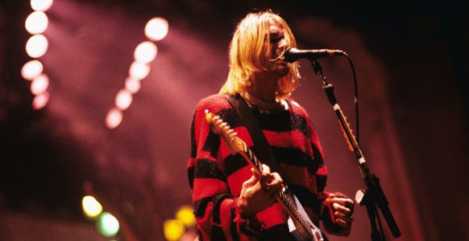
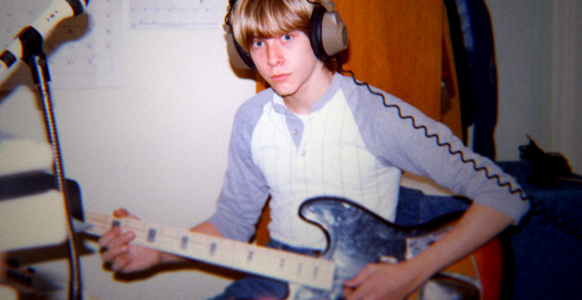
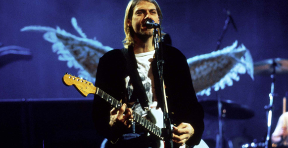
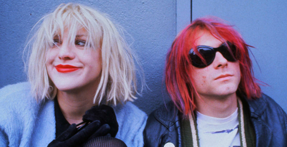
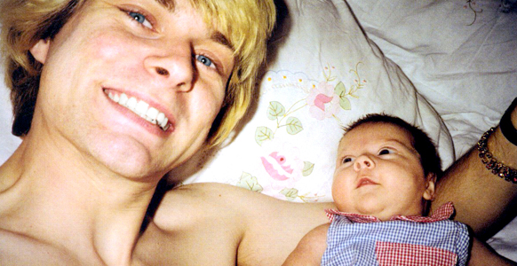
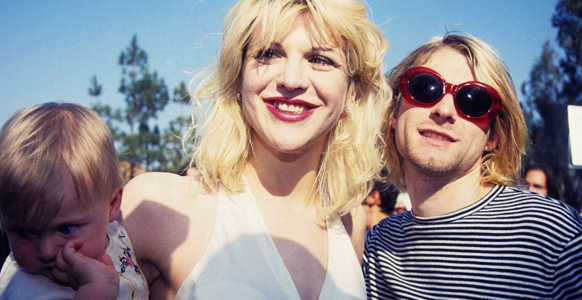

Most people know Kurt Cobain as the singer of Nirvana who tragically took his own life at the age of 27. Cobain was a talented musician and an influential figure in the 90s alternative rock scene. He also battled depression, suffered from chronic pain, and took a massive amount of drugs to cope with his demons. Read all about how he grew from a gifted young boy to a troubled rock star who couldn’t escape his unfortunate fate.
Cobain was a happy child with an interest in art and music. As a young boy he would draw his favorite characters, and his grandmother, a professional artist, supported his artistic endeavors. He started singing and playing the piano at a very young age, and wrote a song when he was just four years old. His sunny personality changed after his parents divorced when he was nine years old. He recalled in a 1993 interview: “I desperately wanted to have the classic, you know, typical family. Mother, father. I wanted that security, so I resented my parents for quite a few years because of that.”
Cobain moved back in with his mother when he was in high school. He dropped out of school with just two weeks left in his senior year because he didn’t have enough credits to graduate. His mom told him to get a job or she would kick him out. Cobain chose to leave and became a transient. He met women who inspired his music. He moved in with Tracy Marander, who financially supported them both. He wrote “About a Girl” from the Nirvana album Bleach about her. He also dated Tobi Vail of the band Bikini Kill, and they recorded music together.
Next: the tragic repercussions of Kurt’s unhappy home life.
He Started Using Drugs At Age 13
Cobain started smoking marijuana at age 13 and continued to use the drug throughout his life. His girlfriend Marander also claimed Cobain was a heavy user of LSD. His bandmate, bassist Krist Novoselic, said Cobain would do “drugs, acid, any kind of drug.” He also used heroin and went to rehab in 1992, but he relapsed and overdosed a few months later. In 1994, he had another drug and alcohol overdose. Novoselic recalled that Cobain was “out of his mind on heroin” just days before he committed suicide. “I remember seeing him those last days and he was loaded,” he told SPIN in 2015.
After dropping out of high school, Cobain formed the band Fecal Matter with Dale Crover on bass and Greg Hokanson on drums. They made original music and also sang songs by The Ramones, Led Zeppelin, and Jimi Hendrix. They also made a demo tape, which drew the attention of Krist Novoselic — who later teamed up with Cobain to form Nirvana. The Fecal Matter song “Spank Thru” was officially released on the 2005 Nirvana rarities album Sliver: The Best of the Box. “Downer” was re-recorded for Bleach, and “Annorexorcist” was re-recorded for 2004’s With the Lights Out boxed set.
Cobain suffered from an undiagnosed chronic stomach condition, which might have been Crohn’s disease and/or IBS. He self-medicated with various drugs to get rid of the pain, including heroin. While he initially used the drug casually, by 1990 he was addicted. He wrote in a letter: “So after protein drinks, becoming a vegetarian, exercise, stopping smoking, and doctor after doctor I decided to relieve my pain with small doses of heroine[sic} for a walloping three whole weeks. It served as a band-aid for a while, but then the pain came back, so I quit.” Yet, the drug had a powerful hold on him.
Nirvana Exploded On The Scene, But Cobain Struggled With Fame
Nirvana formed in 1987. They made their first demo in 1988 and released Bleach in 1989. After dealing with a rotating roster of drummers, Dave Grohl joined Nirvana in 1990 and was part of their 1991 major-label debut, Nevermind, which included the smash lead single “Smells Like Teen Spirit.” The song popularized the grunge rock movement and made them instant stars. Cobain struggled with the newfound fame and being the poster child for alternative rock. He supported gay rights and the pro-choice movement. At one point, he received death threats from anti-abortion activists after he joined L7’s Rock for Choice campaign.
And now Courtney Love enters the picture.
Cobain met Courtney Love at a nightclub in Portland in 1990 at a time when he was heavily using drugs, including heroin. At first, he tried not to get involved and later recalled: “I was determined to be a bachelor for a few months…But I knew that I liked Courtney so much right away that it was a really hard struggle to stay away from her for so many months.” The pair eventually hooked up and regularly took drugs together. They married in 1992 in Hawaii, and their daughter Frances was born six months later. When she found out she was pregnant, Love claimed she stopped using drugs.
According to Cobain’s cousin, Bev Cobain, a registered nurse, he had Attention Deficit Disorder (ADD) and bipolar disorder (manic depression), which is characterized by mood swings, irritability, and other symptoms. The disorder is difficult to treat, and Bev is the only one to claim that he had it. It’s clear that Cobain suffered from some form of depression. As a child, he would often withdraw to his bedroom and seclude himself. His mantra was: “I hate myself and want to die.” He wrote it in his journals and often mentioned it during interviews. He had frenetic energy and would often become enraged, leading many to believe he was bipolar.
Several Of His Family Members Committed Suicide & Had Mental Illness
Cobain wasn’t the first one in his family to abuse alcohol or commit suicide. When he was 12 years old, his great-uncle Burle shot himself in the stomach and head. Another great uncle died the year before after having an aneurysm due to falling down the stairs while drunk. A third great uncle also shot himself in the head. All three were on his father’s side. Cobain’s great-grandfather on his mother’s side was committed to a mental hospital after stabbing himself. He later succeeded in taking his own life. Then in eighth grade, Cobain and two friends discovered the corpse of a boy who hanged himself.
Love called police on March 18, 1994, after she and Cobain had a fight. She told officers that Cobain was upset and locked himself in a room by himself with a 38-caliber revolver. She told them he was planning on taking his own life. The police were able to get inside the room and removed the revolver and three other firearms as well as a bottle of pills. Cobain later told authorities that he was not actually planning on killing himself. Still, his behavior led Love, his family, bandmates, and management company to seek the help of professional counselors.
On February 13, 2018, Frances Bean Cobain, 25, announced on Instagram that she was celebrating her second year of sobriety. She wrote: “The fact that I’m sober isn’t really public knowledge, decidedly and deliberately. But I think it’s more important to put aside my fear about being judged or misunderstood or typecast as one specific thing.” She added: “It is an everyday battle to be in attendance for all the painful, bazaar, uncomfortable, tragic, [expletive] up things that have ever happened or will ever happen… How we treat our bodies directly correlates to how we treat our souls. It’s all interconnected.”
After What Would Become Nirvana’s Final Concert, Cobain Overdosed In Rome
Nirvana played what would be its last concert on March 1 in Munich, Germany. Cobain suffered from bronchitis, which led the group to cancel their remaining European tour dates. Cobain flew to Rome, Italy, to recuperate where he was joined by his wife. She told Rolling Stone in 1994 that “he hated everything, everybody. Hated, hated, hated.” Three days later, Cobain was admitted to the hospital after overdosing on champagne and Rohypnol, which he took to treat his chronic stomach pain. At first, people believed the overdose was accidental. Following his death, many believed it was a suicide attempt.
Singer-songwriter Mark Lanegan of the Screaming Trees knew Cobain really well, and the pair was close. In the week leading up to the singer’s death in 1994, Lanegan hadn’t spoken to Cobain, and it was worrying. Cobain isolated himself from those around him. Lanegan told Rolling Stone: “Kurt hadn’t called me. He hadn’t called some other people. He hadn’t called his family. He hadn’t called anybody.” Lanegan was unsettled by the lack of communication and explained he had been “looking for [Kurt] for about a week before he was found. . . . I had a feeling that something real bad had happened.”
After returning to Seattle from Rome, Cobain’s friends and colleagues noticed that the singer’s behavior was off. Gold Mountain Entertainment’s Janet Billig, who managed Love’s group Hole, described Cobain as “cuckoo.” He had problems with Love and was also struggling with his band. Love told MTV that when Cobain returned from Italy he was disgruntled with Nirvana, saying: “I hate it — I can’t play with them anymore.” He only wanted to work with R.E.M. frontman Michael Stipe. “In the last few weeks, I was talking to Kurt a lot,” Stipe told Rolling Stone. “We had a musical project in the works, but nothing was recorded.”
He Leaves Behind A Strong Legacy
Cobain is considered one of rock’s most iconic musicians. He was the voice of Generation X and has made numerous “best of” lists for his singing and guitar abilities. He is a major figurehead for the 1990s alternative rock scene. Fans continue to pay tribute to Cobain on the anniversary of his death at and near his home in Washington. In 2009, a monument to Cobain was erected in Aberdeen, Washington. Several books and films have been written about Cobain, including the 2015 documentary Kurt Cobain: Montage of Heck and 2015 docudrama Soaked in Bleach, which suggested his death may have been a homicide.